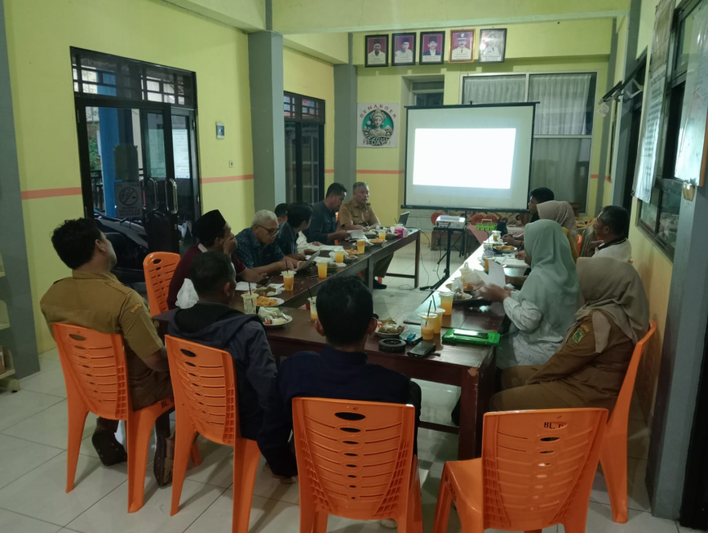
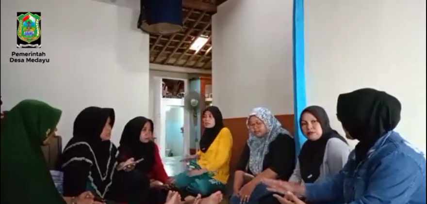
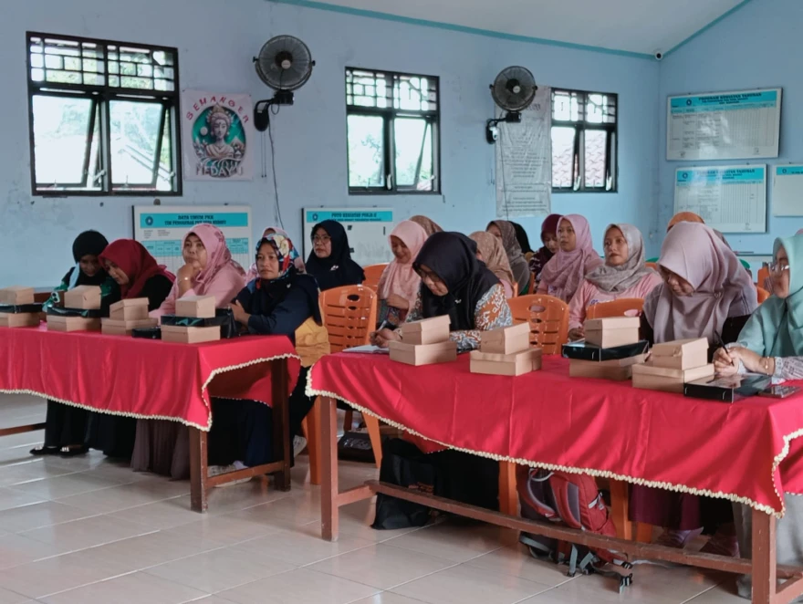
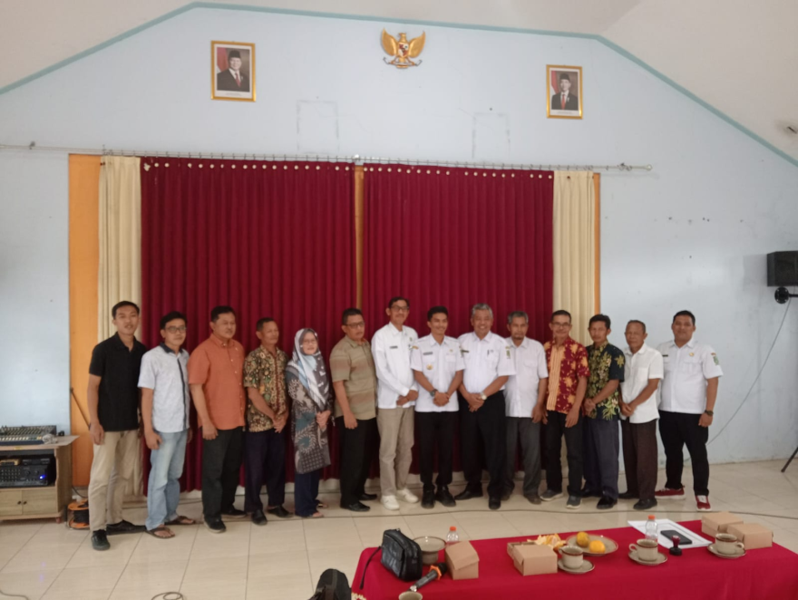
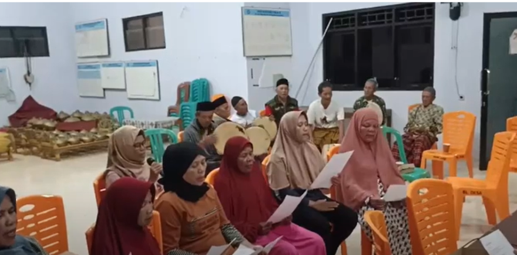
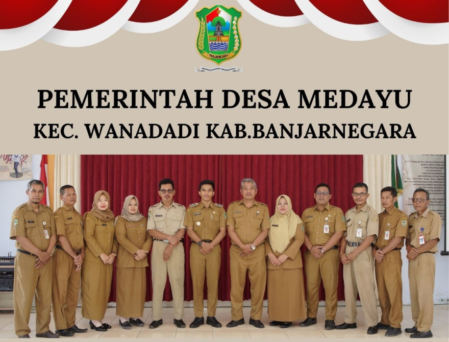

Galeri Kegiatan Desa
Dokumentasi aktivitas, pembangunan, dan acara kemasyarakatan di Desa Medayu

Pemerintahan
Musyawarah Perencanaan Pembangunan Desa (Musrenbangdes)
14 Mei 2026

Kemasyarakatan
KEGIATAN TOKOH PEREMPUAN DESA ANTI KORUPSI BERSAMA KADER DESA MEDAYU
10 Mei 2026

Kesehatan
Pelaksanaan Kegiatan Posyandu Balita dan Lansia Rutin
05 Mei 2026

Kesejahteraan
Penyaluran Bantuan Langsung Tunai (BLT) Dana Desa
28 April 2026

Pemberdayaan
PEMERINTAH DESA MEDAYU MEMFASILITASI KEGIATAN LATIHAN KESENIAN RODAD
20 April 2026

Pembangunan
Peninjauan Realisasi Pembangunan Jalan Rabat Beton
12 April 2026